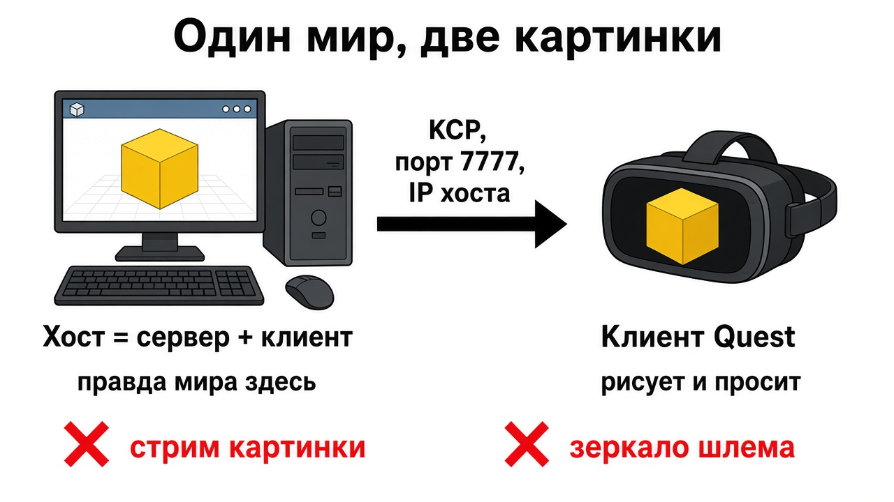

Тетрадь 1 · твой ПК
Хост на Windows варит один мир. Шлем Quest заходит в него по IP. Mirror — это код сети в Unity, не зеркало шлема и не трансляция картинки.
Ниже восемь вопросов. Под каждым сразу написан ответ.
Ответ
Локальная игра — один Play. Окно на ПК видит только этот ПК. Шлем со своим билдом видит только себя, пока нет подключения.
Сетевая игра — несколько программ договорились об одном мире. Картинка у каждого своя. Правда одна.
Сервер решает: кто зашёл, какой объект родился, какое число настоящее.
Клиент рисует и просит.
Хост — сервер и клиент в одном процессе. В классе хост — ПК. Шлем — клиент.
Отдельный сервер без окна и без игрока в классе не нужен: некому нажать Host.
Mirror (в стартере v96.11.2) несёт байты, спавнит объекты и рассылает поля. Транспорт — способ нести байты. У нас KCP, порт 7777. Рядом в той же папке лежат Telepathy (TCP, удобнее ловить ошибку, хуже для частых поз) и SimpleWeb (браузер). На Quest их не включай.

Ответ
Два Play без Host — две отдельные игры, даже если проект один. Один нажал Host, второй вписал IP и Connect — сетевой куб один на двоих. Рисуется он всё равно дважды. Если связь плохая, куб у гостя догоняет рывками, а у хоста окно плавное: хосту пакет «до себя» почти не нужен.
127.0.0.1 — это «я сам». Шлем так до ПК не дойдёт. Нужен IPv4 хоста в той же сети. Его пишет жёлтая строка лобби.
Если у тебя день, а у друга ночь, это не «графика сети». Небо каждый клиент рисует из своей сцены. Сцены разъехались.
NetworkManager висят транспорт и префаб игрока.StartHost(). Клиент пишет адрес в networkAddress и вызывает StartClient().OnServerAddPlayer создаёт игрока и сажает его на соединение. Объект виден всем, только если на префабе есть NetworkIdentity и префаб лежит в Registered Spawnable Prefabs.NetworkIdentity. Его не спавнят вручную.isServer — этот процесс сервер. isClient — клиент. На хосте оба true. isLocalPlayer — это твой игрок. isOwned — у тебя authority на объект (свой аватар или схваченный куб).
Чужой transform ты не двигаешь «по-настоящему». Либо объект твой, либо ты шлёшь Command.
Ответ
package.json, установка падает.SmenaNetworkManager. Второй менеджер — вторая игра в том же процессе.Ответ
KcpTransport, один порт на всех (7777).NetworkIdentity. Пустая ссылка даёт в консоли «playerPrefab не назначен».NetworkIdentity.NetworkTransformUnreliable для рук и куба в руке (часто и с низким лагом, пакет может потеряться). NetworkTransformReliable для двери, которая должна доехать точно. NetworkTransformHybrid есть в этой версии Mirror, но пока хватает одного из первых двух — бери его. На учебном кубе стартера стоит Unreliable. Send Rate 10 на менеджере — это интервал 0,1 с. Буфер = интервал × множитель. В документации советуют около 3, в коде этого релиза по умолчанию 2. Выше множитель — плавнее и с большей задержкой.NetworkAnimator, не SyncVar на каждый кадр.NetworkManagerHUD — готовые кнопки Host / Client из Mirror. В стартере вместо них свой экран лобби. В своей игре можно начать с HUD, потом заменить кнопки на VR.
Ответ
Ответ
| Что происходит | Где искать |
|---|---|
| Connect крутится, статуса нет | IP не хоста, другой порт, разный Wi-Fi, изоляция точки, файрвол на 7777 |
| Хост есть, игрок не появляется | пустой Player Prefab, нет NetworkIdentity, префаб не в списке спавна |
| Объект есть только у того, кто нажал | Instantiate на клиенте без серверного Spawn |
| У друга куб стоит, у тебя едет | нет NetworkTransform или authority не у того, кто держит |
| Вы в разных мирах | оба нажали Host. Нужен один Host |
| После смены сцены игрок пропал | менеджер не DontDestroyOnLoad, или сцена загружена через SceneManager мимо сервера |
| В консоли нет типа Mirror | папку Assets/Mirror не скопировали или она не докомпилировалась |
Ответ
Ответ